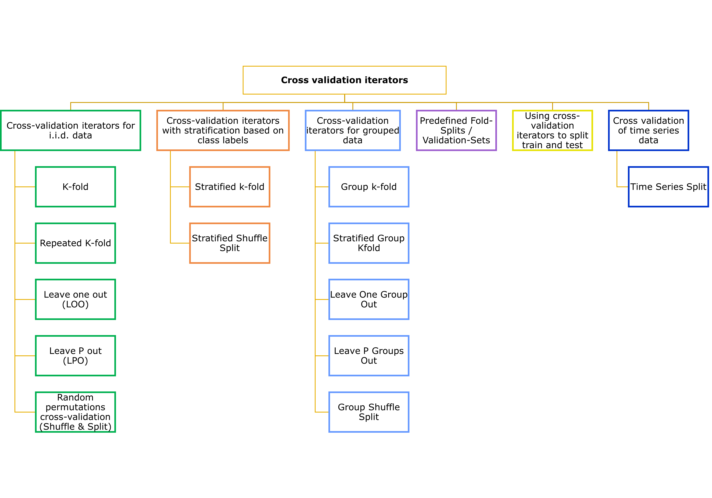

Classification II
This week is a continuation ( of week 6) focusing on classification and accuracy.


other readings:
Application
Paper Review: Milà et al. (2022)
Proposed Variation LOO (Leave- one- out) CV= Nearest Neighbour Diatnace Matching (NNDM) LOO CV.
Test and training data > below > nearest neighbour distance distribution function > CV process > matched to the nearest neighbour distance distribution function (btw prediction and traing point)
why?- cases where spatial auto-correlation is present (distances shorter than the autocorrelation range)
Characterise the distribution> nearest neighbour > target x and sampling x (found during predictions)
Empirical multiplier= nearest neighbour distance distribution function
- Expresses the proportion of prediction points
- Sampling point at a distance equal or lower than-
No edge correction or stationarity assumptions
Simulation 1: Random Fields
- Input parameter: landscape autocorrelation range
- Landscape autocorrelation range: 1, 10, 20, 30 and 40 units
- Each value= 100 Iterations of the simulation
- Each simulation iteration
- Two-dimensional grid = 300 × 100
- Sampling area = [0,100] × [0,100]
- Two distinct prediction areas
- Geographical interpolation = [0,100] × [0,100]– coincided (sampling area)
- Extrapolation [200,300] × [0,100]
- Simulation of independent covariate fields= 20
- Two-dimensional stationary
- Isotropic Gaussian random fields
- Constant mean = 0
Simulation 2: Virtual Species
- LOO CV in simulation 2 = generally agreed (simulation 1 findings)
- LOO CV = overestimated the true RMSE
- Good error estimates
- Underestimated = RMSEs for clustered samples
- bLOO CV
- Radius equal
- Outcome autocorrelation range= larger differences than bLOO CV with radius (= residual range difference). - Difference
- Weak cluster samples (outcome range) = 0.07
- Residual range = 0.04
- Residual range shorter than outcomes range
- Both bLOO= overestimated true RMSEs
Differences for NNDM LOO CV
- By?
- outcome or residual autocorrelation range
- Similar: each other and to LOO CV
Weak clustered sampling
- Reasonable estimates of the error (both)
- Smaller variability (than bLOO counterparts)
Strong clustered sampling
Slightly larger differences
MAE and R2 = similar
Discussion:
- Accounts for geographical prediction space
- How?- matching nearest neighbour distances btw test and training points.
- LOO CV-> distribution of nearest neighbour distances during predictions
- Target and sampling points
LOO CV returned unbiased map accuracy estimates
- Estimating geographical interpolation accuracy with random samples
- Landscapes with very short autocorrelation range
- Independent of sampling pattern and predicted area
If training points (very clustered), long autocorrelation range= NNDM LOO CV
- NNDM LOO CV => remove a large fraction of training data during CV
- Result= unstable model
bLOO, NNDM LOO can only correct instances
- Presence= map accuracy is over estimates
- How?- removing points
Estimation of autocorrelation range= important (NNDM LOO CV)
NNDM LOO CV= nearest neighbour distance distribution function (all ranges below threshold)
- NNDM algorithm= matches the CV to predicted nearest neighbour distance (short distance)
- LOO CV= Start> shortest distance (findings from LOO CV) > remove a training point during CV (yes/ no)
- NNDM LOO CV
- Map accuracy= good
- Distance= ignored
- Actual loaction= ignored (sampling and prediction points)
- Lacks accounting for anisotropy
- NNDM algorithm= matches the CV to predicted nearest neighbour distance (short distance)
Benefiting stakeholders: predictive mapping community
Reflection
- LOO= less biased compared to single test set
- No overestimation
- Time consuming
- Computationally expensive
- Better when u have a small dataset
- Output: accurate estimation of model performance
- LOOCV use= regression + classification